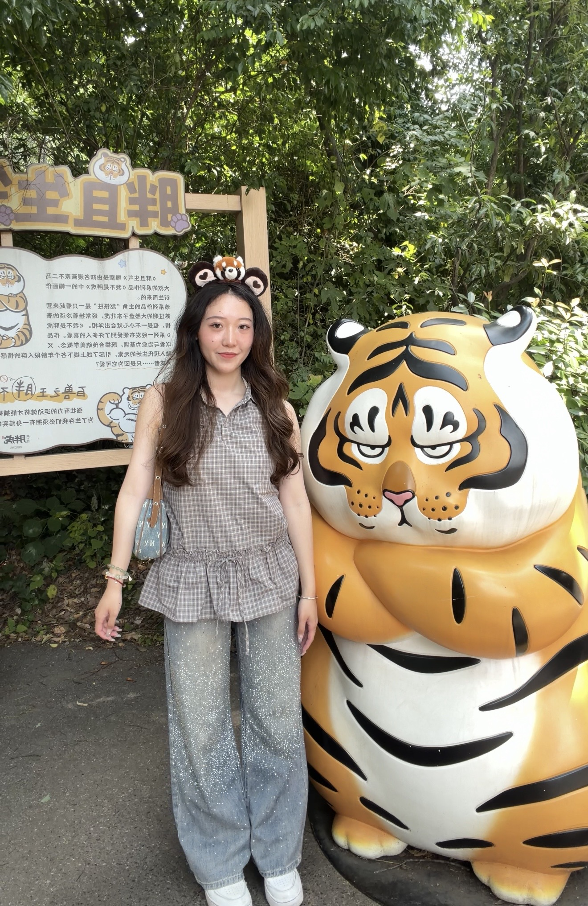

2024 May
University of North Carolina
at Chapel Hill
B.S. in Computer Science
Minor in Music
Relevant Courses
Data Structures · Foundations of Programming · Algorithms & Analysis · Machine Learning

A little about me
Software engineer.
Journalist. Always curious.
I work across software, data, and reporting. I’m interested in how technology can help us understand people, places, and the stories around us.
My work spans applications, newsroom publishing, election data, and immersive journalism—including turning photographs of real places into explorable 3D scenes.
Where I’ve learned
2024 May
B.S. in Computer Science
Minor in Music
Data Structures · Foundations of Programming · Algorithms & Analysis · Machine Learning
2026 May
M.S. in Computer Science
M.S. in Journalism
Two disciplines, brought together.
Natural Language Processing · Computer Graphics · Artificial Intelligence · Database · Data Visualization · User Interface Design
Learning, together
Teaching Assistant · The Lede Program
Supported working journalists during the 10-week data journalism intensive, with office hours and hands-on help in Python, data analysis, visualization, and mapping.
Undergraduate Teaching Assistant · COMP 311 & COMP 110
Led office hours and review support for Computer Organization, and helped introductory Python students work through programming projects and assignments.